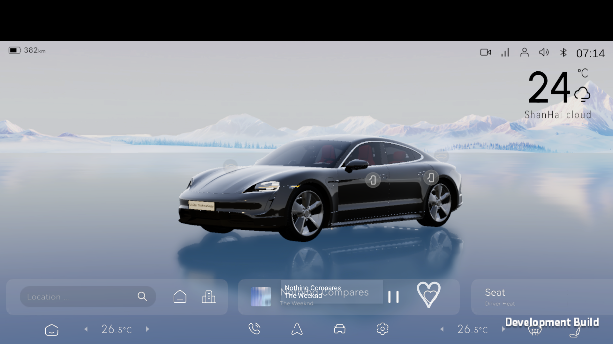

HVAC EFFECT · VERIFIED座舱已调至 23.5°C目标 23.5°C · 回读 23.5°C · source=SIMULATED

COUGAROS · AIOS INTENT ORCHESTRATION · DESIGN ONLY
Central Brain
已连接AIOS 场景编排
SIMULATED
PARKED · 已驻车
上下文 #184 · 2s 前
自然场景输入
说出感受，剩下的交给 AIOS
不需要逐项调节设备。系统会结合座舱上下文生成并执行受治理的方案。
也可以说
可信上下文
数据新鲜
系统已经知道
车辆状态P 挡 · 0 km/hVehicleState · TRUSTED
座舱温度26.5°CClimateState · REPORTED
乘员状态仅主驾Occupancy · FRESH
当前媒体Simple TimesMediaState · PLAYING
AI
一句话只表达目标
模型负责理解，Runtime 决定计划；Policy 决定能否执行，车辆回读决定是否完成。
SESSION #CB-0184 · 自动规划完成
已理解：“我有些疲惫”
归一化为 恢复精力 场景。模型置信度 92%，执行权限仍由治理链决定。
01
理解意图scene.fatigue.assist.v1
完成02
读取 ContextP 挡 / 0 km/h / 单人 / 26.5°C
完成03
编译 Plan4 nodes · 3 effects · 1 suggestion
完成04
安全与权限低风险自动通过；座椅姿态需要确认
等待05
执行并回读确认后自动调度，无需逐项操作
待执行AIOS 生成的恢复方案
预计 18 秒°C
改善空气与体感23.5°C · AUTO · 新风 · 风量 2
自动座
调整主驾休息姿态通风 1 档 · 靠背 42°
需确认Ⅱ
切换恢复精力媒体暂停当前音乐 · 播放 15 分钟舒缓音频
自动⌖
保留导航建议本次不自动发起路线
建议只确认高风险部分车辆已驻车；执行前会重新检查挡位、车速、安全带与乘员状态。
ACTIVE SESSION · #CB-0184
3 / 4 进行中
AIOS 正在自动执行恢复方案
意图
计划
策略
执行
回读
SEAT EFFECT · APPLYING主驾正在进入休息姿态通风 1/1 · 靠背当前 34° / 目标 42°
MEDIA EFFECT · VERIFIED15 分钟恢复音频已播放Recover Focus · 14:42 remaining
NAVIGATION · SUGGESTION导航未自动启动本场景只保留“寻找休息点”建议
实时调用链
SIMULATEDpolicy.allowedHVAC / Mediaapproval.validatedSeat · context #184effect.verifiedHVAC · readback matcheffect.applyingSeat · observation 2/3
✓
SESSION #CB-0184 · COMPLETED
恢复方案已完成
3 个 Effect 已通过设备回读确认，1 项建议未自动执行。
意图恢复精力“我有些疲惫”
→
计划4 个节点安全检查通过
→
执行3 个 Effect全部已验证
可验证结果
READBACK VERIFIED座舱体感23.5°C · 新风 · 风量 2目标与回读一致
主驾座椅通风 1 档 · 靠背 42°目标与回读一致
恢复音频Recover Focus · 播放中Media session active
闭环反馈
现在感觉怎么样？
反馈只影响后续建议，不会把本地按钮状态当作车辆回读。
本次自动化可撤销撤销会创建受治理的补偿 Session，并再次等待设备回读。